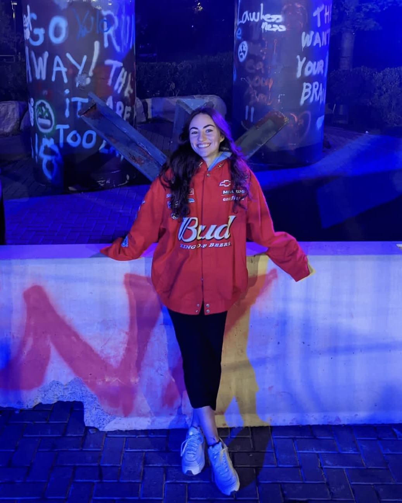

> Welcome to DKPROJECTS!
> Discover my professional journey and work experience through my interactive
website crafted with HTML, CSS, and JavaScript.
Whether you're an employer or simply interested, I invite you to browse and
learn more about me and my work.
> **************************** MAIN MENU ****************************
1. Enter "1" to learn more about me
2. Enter "2" to learn about my work expirence at Tulip Retail
3. Enter "3" to get my contact information
*******************************************************************
> ABOUT ME

Hi, I am Daniella Konert! I am a highly motivated software engineering co-op student at the University of Guelph.
I have a strong foundation in programming languages such as Python and C, as well as a profound passion for Game and App Development.
My academic journey at the University of Guelph has provided me with essential skills in critical thinking and problem-solving,
while my attention to detail and strong work ethic have played a pivotal role in succeeding throughout various software projects.
In addition to my academic achievements, I've gained invaluable hands-on experience in full-stack development during my current role at Tulip Retail.
In this professional setting, I've expanded my technical expertise and worked collaboratively to create innovative software solutions.
Moreover, in previous positions, I played a key role in providing IT support and enhancing user experience for the gym's website at Dynamo Gymnastics.
I also led the development of educational materials for JDOHSS in their STEM program.
Throughout these work experiences, I have consistently demonstrated effective communication and teamwork,
fostering collaborative environments to achieve common goals and deliver successful results.
Lastly, my dedication to personal projects not only emphasize my ongoing commitment to learning but also highlights my skills in project management.
Overall, my academic achievements, technical skills, and professional experience have shaped me into a versatile and dedicated software engineer.
> FUN FACT: I can sing 🎤😮
> During my third week at Tulip Retail, my manager's manager requested that I sing during a Dev All Hands meeting.
He started by playing a heartwarming video of ten-year-old me, and then, with a playful smile, he asked me to step up and sing in front of the entire company.
It was a nerve-wracking moment, but it also showed the company's welcoming and fun culture.